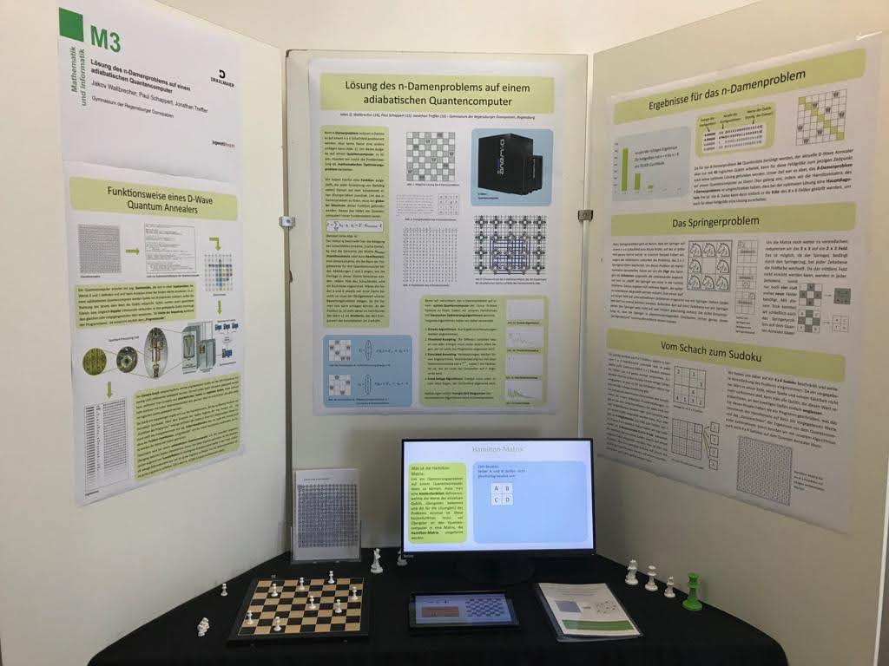
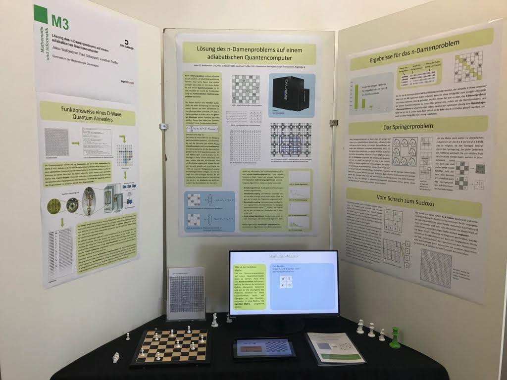
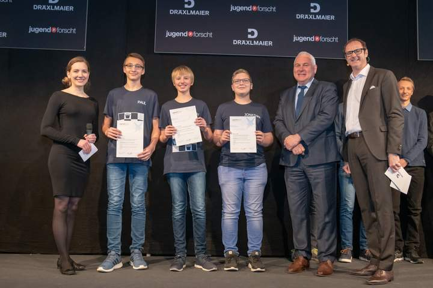
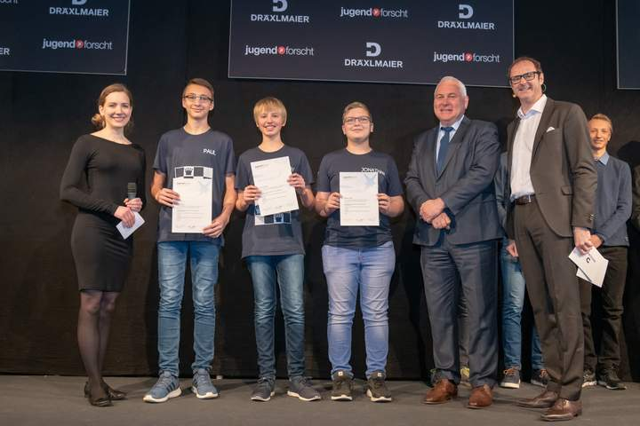
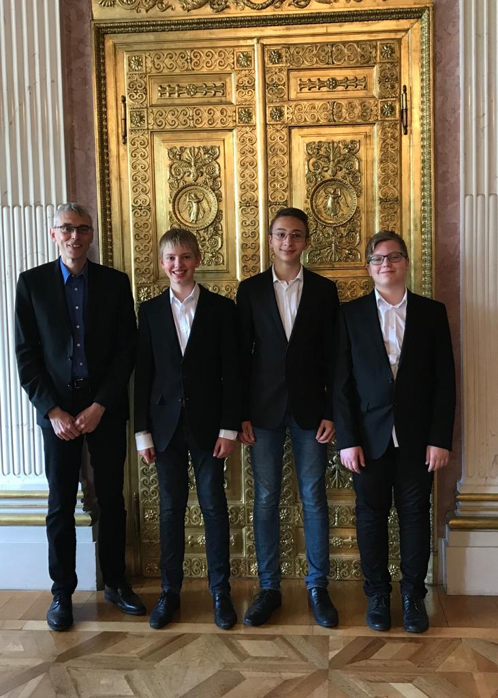
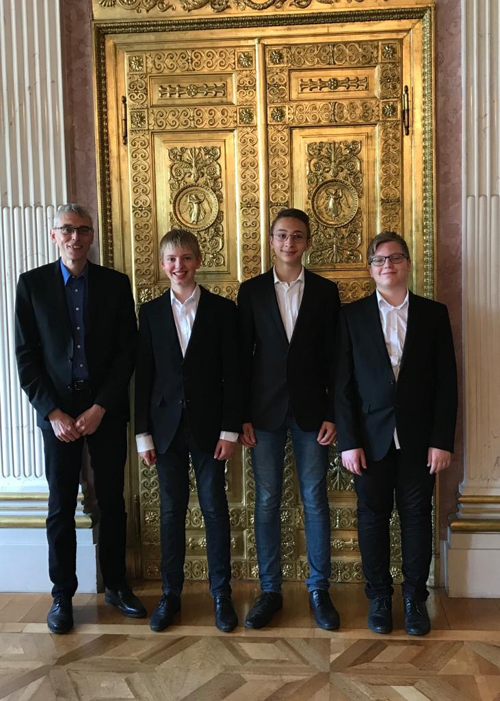

About
Auf einem n x n großen Schachfeld sollen n Damen so aufgestellt werden, dass keine Dame eine andere bedroht. Dieses klassische Schachproblem haben wir auf einem adiabatischen Quantencomputer gelöst.
Des Weiteren konnten wir unsere Lösungsstrategien auf andere Optimierungsprobleme, wie z.B. Sudokus und das Springerproblem, übertragen.
Bei unserer Arbeit ging es aber nicht um das Finden von Lösungen für das n-Damenproblem, wofür es bereits gut geeignete Algorithmen auf herkömmlichen Computern gibt, sondern viel mehr um die Aufbereitung des Problems, die notwendig ist, damit es mit dem von uns verwendeten Quantencomputer, einem sogenannten adiabatischen Quantum-Annealer, gelöst werden kann.
Für unser Vorhaben mussten wir das Damenproblem in die Sprache der Mathematik übersetzen. Dabei galt es, eine Funktion zu definieren, die für jede Konstellation der Damen auf dem Schachbrett einen Wert zurückgibt, den man in der Optimierung als "Energie" der Verteilung bezeichnet.
Die Aufgabe des Quantum-Annealers ist es dann, das globale Minimum dieser Energiefunktion und damit automatisch auch eine richtige Lösung zu finden.
Welche Schwierigkeiten wir bewältigen mussten und zu welchen Ergebnissen wir beim Ausführen der Programme gekommen sind, können Sie in unserer Dokumentation lesen.
Wir bedanken uns bei:
Wir bedanken uns bei unserem Projektbetreuer René Grünbauer für die Betreuung und den Kontakt zum Forschungszentrum Jülich. Außerdem möchten wir uns bei Prof. Dr. Kristel Michielsen vom Forschungszentrum Jülich für ihre Unterstützung und die Rechenzeit am D-Wave Quantencomputer bedanken. Nicht zuletzt wollen wir Herrn Dennis Willsch aus der Forschungsgruppe von Prof. Michielsen für die Erklärungen und Hilfestellungen rund um die Benutzung und Steuerung des Quantencomputers danken.
- Rene Grünbauer (der beste Betreuer der Welt)
- Prof. Dr. Kristel Michielsen vom Forschungszentrum Jülich für die Rechenzeit auf dem D-Wave Quantencomputer und die Einladung einen Vortrag beim ISC 19 zu halten
- Dennis Willsch vom Forschungszentrum Jülich für die Erklärungen und Hilfestellungen rund um die Benutzung und Steuerung des Quantencomputers
- Herrn Dr. Patrick Glauner für die Einladung, einen Vortrag bei der Krones AG zu halten
- Frau Dr. Katharina Schaar und den anderen Juroren des Fachbereichs Mathematik beim Landeswettbewerb Jugend Forscht für die vielen Verbesserungsvorschläge
- Herrn Dr. Andreas Neuzner (Physik Juror, Landeswettbewerb Jugend Forscht) für den Kontakt zum MPQ, an dem wir einen Vortrag halten dürfen
- Pfleiderer und Dräxlmaier
 Neumarkt in der Oberpfalz / Regionalentscheid
Neumarkt in der Oberpfalz / Regionalentscheid


 

 

 
